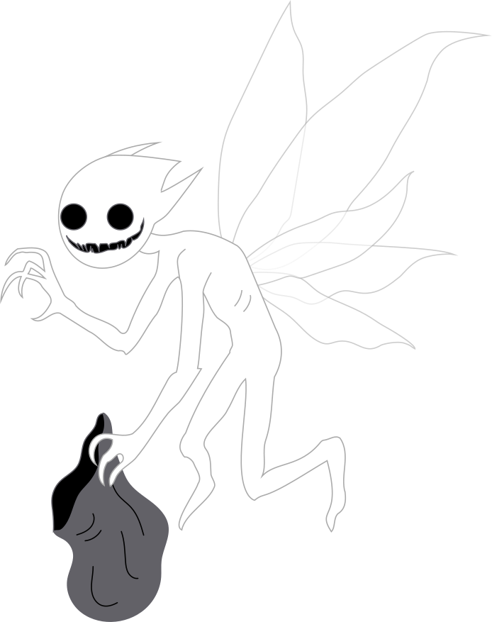
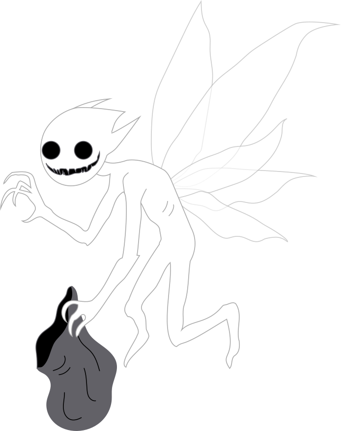

Tema 2 - Grundlæggende Web
I tema 2 lærte vi om de grundlæggende redskaber for kodning. Vi lærte at lave struktur i HTML og layout i CSS, og de grundlæggende begreber indenfor kodning, Vi lærte hvad de forskellige tags betyder og hvordan vi skulle bruge dem. I opgaven 02.01.02 “Website” (studiestartsopgaven) lærte vi at følge et layoutdiagram, hvordan vi skulle gruppere vores HTML for at opnå det bestemt layout. Her brugte jeg display: ”grid”, “column” og ”row” til layout. Jeg brugte ”order” til at flytte rækkefølgen af billeder/tekst. Jeg brugte ”fr” og ”em” til at beskrive størrelse/position, så siden forholder sig til størrelsen på brugerens skærm, og vi brugte ”mediaquery” til at designe et mobilt format af siden.
Link til Website 02.01.02
For at planlægge opgaven “Emnesite” 02.02.01 lavede vi vores eget layoutdiagram, wireframe, moodboards og styletiles til siden. I denne opgave lagde jeg stor vægt på at siden skulle virke troværdig og letlæselig, da siden handlede om et håndværk indenfor teater. For at opnå dette, brugte jeg nogle af de grundlæggende design principper: gestaltlov, farveharmoni, kontrast, forskellige stilarter og typografi. Det gjorde jeg således: Jeg valgte at bruge en letlæselig font, som lignede den skrifttype man bruger i manuskripter, for at pege tilbage på teater-universet. For at gøre siden ydermere overskuelig, lavede jeg kontrast mellem overskrift og tekst, ved at bruge forskellige fonts, størrelse og vægt. Jeg lavede ”margin” på tekstbidderne for at give siden mere luft, da den er meget tekstbaseret og derfor er det vigtigt at indholdet virker overskueligt. Jeg valgte stilarten Art Deco som opstod i 1920’erne. Ud fra en stilanalyse fandt jeg frem til at denne stil associeres med showbiz/teater. Det er en lidt old-school stil, som forbindes med glamour. Dette synes jeg passede perfekt til temaet. Jeg valgte at lægge et sepia filter på de billeder som beskrev arbejdet, da de fleste fotografier i den tid stadig var i sort/hvid/sepia.


Link til Emnesite 02.02.01
Tema 3 - Grundlæggende UX
I tema 3 lærte vi grundlæggende UX. Hvordan vi interagerer med et design, og oplevelsen af det. Til det har vi lært at bruge mange forskellige test: I opgaven 03.01.02 “Research og dataindsamling,” startede vi med at lave en desktop research, for at finde ud af, om der er et marked for vores produkt. Dernæst lavede vi kvalitative og kvantitative undersøgelser. Til den kvantitative undersøgelse, lavede vi et spørgeskema, for at finde relevant information, om vores målgruppe. Her skulle man tænke meget over hvordan man formulerede spørgsmålet, så det var forståeligt for målgruppen. Ud fra dette spørgeskema fik jeg en masse spændende information: jeg spurgte bl.a. om de synes der manglede flere farverige valgmuligheder, men det viste sig, at mange af testpersonerne, i virkeligheden gerne ville have: mere inkluderende størrelser og kønsneutralt tøj. Svar som dette gør at min forretning, hvis jeg potentielt skulle gå videre med det, kunne ændre vision, fordi efterspørgslen var anderledes end jeg troede. Bagsiden af denne undersøgelse er, at jeg fik nogle svar, som jeg ikke kunne bruge, da nogle af deltagernes svar, forstod jeg ikke. Til den kvalitative undersøgelse lavede vi et dybdegående interview, med en enkelt person. Denne undersøgelse svarede mere til mine forventninger, det gode ved denne type undersøgelse, var at jeg kunne bede om en uddybelse af de svar jeg fik, for at få en mere præcis forståelse. Hele vejen igennem vores UX-forløb, lærte vi vigtigheden af test. Når vi producerer noget som er tilegnet andre end os selv, så er det vigtigt vi bruger et sprog (copy og microcopy) som er forståeligt, for folk udefra.


I opgaven 03.02.02 “Løsning” designede vi vores egen webshop. Her brugte vi XD til at lave en klik-bar prototype af hjemmesiden. Dette gjorde at vi kunne teste siden, hurtigt og helt uden kodning. Til at teste min side, brugte jeg forskellige test. Blandt andre brugte jeg: 5-sekunders testen, her får deltageren 5 sekunder til at se designet, jeg brugte denne metode, for at finde ud af hvad brugeren så først, og hvilket indtryk brugeren fik af designet. Jeg brugte dette, for lynhurtigt at finde ud af, om designet gav det ønskede udtryk. Jeg brugte også “Tænke-højt-testen”, her bad jeg brugeren om, at fortælle sine tanker, imens han/hun bruger produktet. Her kan man nemt fange ting som irriterer/forvirrer brugeren, og derved forbedre designet. Disse test gav et godt indblik i hvad jeg kunne forbedre, og jeg lærte vigtigheden af UX. Man kan nemt have en forudindtagelse af hvad man forventer folk vil sige, men til nogle af testene fik jeg nogle helt andre svar, end jeg havde forventet.


I opgaven 03.03.02 “Pitch” lavede vi en præsentation af hele vores proces, med hver vores webshop. Her samlede vi vores undersøgelser, informationer og indsigter fra researchen, samt vores udfordringer. Her fik vi øvet at hvordan man kort og konkret formulerer sine indsigter.


Tema 4 - Animation
I opgaven 04.04.01 “Temaopgave” lærte vi at animere i CSS, ved hjælp af ”keyframe”, og hvordan man koder i JavaScript. Vi denne opgave skulle vi lave vores eget spil. Først udviklede vi en spil-ide, og dernæst lavede vi en mock-up af spillet, i form af en Paper-prototype. Til selve designet af spillet, ville jeg gerne lave et spil, som havde en uhyggelig/skummel følelse. For at opnå dette valgte jeg stilen ”Year Walk”, kombineret med flat design. Til formgivningen af designet, brugte jeg design princippet Kiki og Bouba. Jeg designede en karakter i Bouba, med et stort rundt hoved, runde øjne og tænder. Jeg brugte dette for, at give karakteren et mere barnligt udseende. Den anden karakter har spidse vinger, lemmer og fingre, for at give den et uhyggelig/otherworldly udseende. I vores forløb lærte vi om baggrundsdesign, der lærte vi teori om hvordan man, placere sin tegning, og hvordan det at lave flere lag, giver et atmosfærisk perspektiv. Jeg valgte at designe baggrunden til spillet, i forgrunden, for at give en fornemmelse af at være tæt på, også fordi hele spillet foregår om natten, hvor man normalt ikke kan se så langt i mørket. Det hele tegnede jeg i Illustrator, og gemte billederne som SVG’er, så de er skalerbare.
 

Til planlægningen af kodningen af spillet, lavede jeg et aktivitetsdiagram. Her fik jeg et overblik over de forskellige funktioner, jeg skulle lave i Javascript. For at opnå bevægelse i spillet, lavede jeg forskellige animationer i CSS. Blandt andet lavede jeg en klasse, som skulle få objekterne til at falde ned, én som fik dem til at forsvinde, og én med forskellige hastigheder, og positioner. Dette gjorde at spillet var mindre forudsigeligt, og dermed mere spændende at spille. Jeg brugte ”Event.listners” i JS, på forskelligvis f.eks. ved ”mouseclick” eller ”animationend”. Når et objekt afslutter en animation, så sætter den en anden funktion i gang. Jeg brugte “Math.random” til at generere et tilfældig tal, og dermed en tilfældig startposition på objekterne. Jeg brugte “if/else” sætninger i JS, for at få forskellige udfald baseret på, om en given betingelse er sand eller falsk. Dette brugte jeg sådan: ”if” point er større end 9, så vinder spilleren, og bliver ført videre til ”vindersiden”. Jeg brugte ”else” til at sige hvis point er mindre end 9, så taber spiller og bliver ført videre til ”tabersiden”. Jeg brugte ”let” til at definere variabler, såsom point, liv osv. Jeg brugte konkatenering til at sammensætte en klasse, med et random tal, f.eks. speed + (ramdom) giver klassen ”speed2”, dette giver en bestemt hastighed. Til fejlfinding brugte jeg inspektor i browseren.
Link til 04.04.01 Temaopgave.Tema 5 - Grundlæggende Indhold
I opgaven 05.01.02 “Pilotsite” var målet at designe en hjemmeside, som handlede om en persons passion. For at løse denne opgave startede jeg med at planlægge spørgsmål til et interview, planlagde en lokation vi kunne optage uforstyrret og lavede et storyboard for at vide på forhånd hvilke shots jeg gerne ville filme. Jeg var meget opmærksom på billedkomposition, her brugte jeg bl.a. ”rule of thirds” til at balancere billedet og at skabe dynamiske/interessante shots. Passionen handlede om boksning, så for at gøre hans bevægelser/slag mere faretruende, brugte jeg frøperspektiv i nogle shots, igen for at skabe dynamik, men også for at få personen til at fremstå større. Planen var at fortælle to sider af samme person, jeg ville skabe en handlekraftige, forsvars parate person, faretruende og dynamisk, og så ville jeg vise hvordan personen var til hverdag. Hverdags personen illustrerede jeg i interview delen, hvor jeg filmende i øjenhøjde med personen, for illudere lighed mellem fortælleren og seeren. Jeg lavede den faretruende side, ved bl.a. at lave color-grading i Premiere Pro, her gav jeg videoen en mere kølig tone, for at give en mere fjendtlig følelse, og af samme grund filmede jeg close-up hvor personen slår ud mod seeren. Jeg brugte ”over the shoulder” shots, for at lede seerens øjne ind i billedet. Jeg optog videoen med et OSMO kamera med gimbal, som gjorde at optagelsen blev mere stabile, dette var vigtigt da jeg hele tiden skulle følge med, en person i bevægelse. Jeg optog lyd på en ekstern mikrofon for optimeret lyd. Disse teknikker brugte senere i semesteret i opgaven “Redesign”
Link til 05.01.02 Pilotsite.I opgave 05.02.01 “Redesign” og “tema dokumentation” var vores mål at lave et redesign, for at få en forbedret brugeroplevelse, af hjemmesiden til virksomheden Sara Lou. Min rolle var at lave test, styletile og moodboard, sammen med de andre i starten af projektet. Senere hen designede og kodede jeg, vores fælles generelle CSS style, og en side til produkterne, plus den tilhørende CSS. Jeg tog billeder, og filmede på to forskellige lokationer, i den fysiske butik og i virksomhedens værksted. Efter det redigerede jeg optagelserne til en samlet video, med speak ind over. Før vi optog, planlagde jeg de forskellige shots vha. et storyboard. Det var meget vigtigt for os at vise det rå materiale og at alle produkterne er håndlavet, og personlige. Det opnåede jeg ved at, bruge forskellige kompositioner, bl.a. de tidligere nævnte: “interview” i øjenhøjde, “shots over skulderen” til at filme produkterne blive lavet i hånden, og det samme med “close-up”. Jeg prøvede at skabe en personlig forbindelse med ejeren, ved at lave midium close-ups af hende, hvor vi bare følger hende snakke med kunder i butikken. Som noget nyt brugte jeg også panorering, og zoom-in, til at filme produkterne i butikken, dette gjorde jeg, for at gøre de statiske objekt mere dynamisk.

For at opnå designet af re-designet, lavede vi “desk research”, 5-sekunders test og Bert-test af virksomhedens nuværende hjemmeside. Dette gjorde vi for at finde ud af, hvilket udtryk hjemmesiden udstrålede og hvad vi skulle ændre for at få mere af det ønskede udtryk. Disse test lavede vi også på vores eget “redesign”, for at se om vi opnåede nettop det. Til lavede vi Lighthouse test. Her så vi en forholdsvis høj score på: performance, accesibility og best practices. Men vores SEO var lidt lavere på 80 point, så for at få en højere score i det, kunne vi implementere nogle bedre søgeord. For at holde tungen lige i munden, lavede vi SCRUM hver morgen. Det gav et godt overblik over opgaven så vi nemt kunne holde styr på de opgaver vi manglede at lave. Til sidst lavede vi en Pecha Kucha til at præsentere vores arbejde kort og koncentreret.
Link til Pecha KuchaTema 6 - Portfolie Eksamen
Til mit projekt havde jeg en ide om at jeg ville lave mit design moderne, simpelt og elegant. Dette har jeg prøvet at opnå ved at lave siden minimalistisk. Det ses bl.a. i min farvebrug eller mangel heraf. Jeg har grundlæggende kun brugt sort/hvid, men for ikke at miste fornemmelsen af de forskellige projekter, jeg har lavet, har jeg valgt at beholde, de beskrivende billeder, i deres original farver. For at give siden et elegant touch, har jeg valgt at sætte en hvid svane på en sort baggrund og brugt fonten Playfair Display. Den har jeg valgt da, den både er letlæselig, og har en elegant fornemmelse med "serif" på bogstaverne. Fonten virker harmonisk med proportional spacing, og indsnævringer ved rundingerne. Jeg planlagde mit design ved at lave et styletile og en detaljeret wireframe af siden.

For at give den en moderne fornemmelse, har jeg indsat forskellige illuminerende ringe, (som kan accessoires med ringe i vandet). Dette gjorde jeg for at tale tilbage, til billedet af svanen, og for at give siderne en sammenhæng, en "rød tråd” igennem hele siden. Det giver en fornemmelse af kontinuerlighed. Derudover gør det at de sider med meget tekst, ikke bliver for bare at kigge på. Jeg har valgt at lave hele portfolio sidens design asymmetrisk, for at gøre siden dynamisk. Til forsiden har jeg fulgt "rule of thirds" ift. placering af tekst og svanen, her er de placeret i hver sin tredjedel, og ligeledes på portolio-siden er menu-baren placeret i en tredjedel.
Jeg har valgt at kode menuen på portfolio-siden i Javascript, sådan at når man hover over en "li" så kommer der en CSS animation på, som gør at teksten bliver større. Samtidig ville jeg også have at de omliggende ”siblings” ville blive større sammen med.